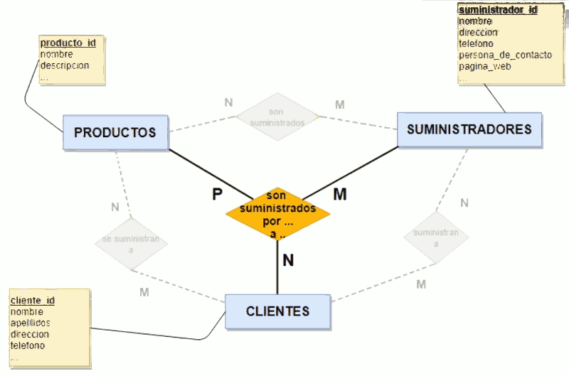
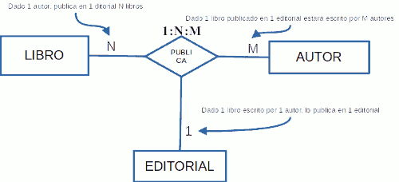
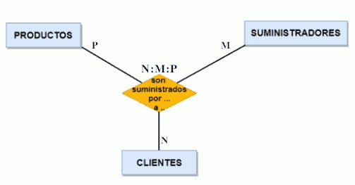
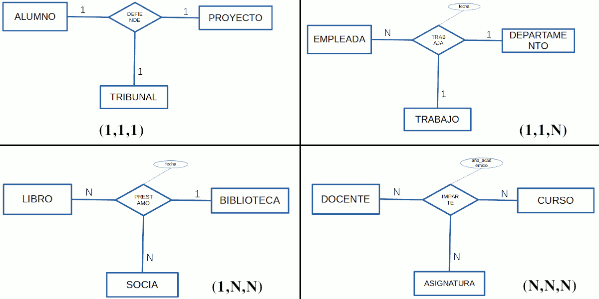

Una relació ternària és una associació de tres entitats. Sovint, la relació ternària la utilitzarem quan entre tres entitats existeixen relacions binàries N:N (molts a molts) entre elles. Si entre elles existeix alguna relació 1:N (un a molts) o 1:1 (un a un), llavors la relació ternària no té molt sentit.
La manera de trobar cardinalitats en les relacions ternàries és fixar una combinació d'elements en dos dels extrems de la relació i obtindre lògicament les cardinalitats mínima i màxima en l'altre extrem lliure. Explicat d'una altra manera, en una relació ternària es relacionen dues de les entitats (en termes d'unitat) respecte a l'altra entitat.
Exemple: les entitats lliure, autor i editorial es relacionen les tres mitjançant l'acció de publicar el llibre (en un any concret, amb un ISBN i amb un determinat nombre de pàgines en l'edició).
Per a determinar les cardinalitats cal preguntar-se per:
- Quants autors pot tindre un determinat llibre publicat en una determinada editorial(cardinalitat en l'extrem de l'entitat autor), expressat d'una altra forma: Donat un llibre d'una editorial, Quants autors ho han publicat?
- Quants llibres pot tindre un determinat autor publicats en una determinada editorial (cardinalitat en l'extrem de l'entitat lliure), expressat d'una altra forma totalment equivalent a l'anterior: Un autor que col·labora amb una editorial, Quants llibres té publicats?
- En quantes editorials pot un determinat autor publicar un mateix llibre (cardinalitat en l'extrem de l'entitat editorial). Expressat d'una forma diferent però equivalent podríem dir: Un autor que ha escrit un llibre, En quantes editorials el té publicat?
Aquestes relacions es donen quan ens interessa conéixer la concurrència de les tres en un mateix moment. Interessa conéixer la cardinalitat màxima en cadascuna de les tres branques de la relació. Poden ser: (1, 1, 1), (1, 1, N), (1, N, N) o (N, N, N). No importa la posició on es troba la cardinalitat N, és a dir, és el mateix (N, 1, 1) que (1, N, 1) o que (1, 1, N).
|
 |
Ejemplos de cardinalidades:
